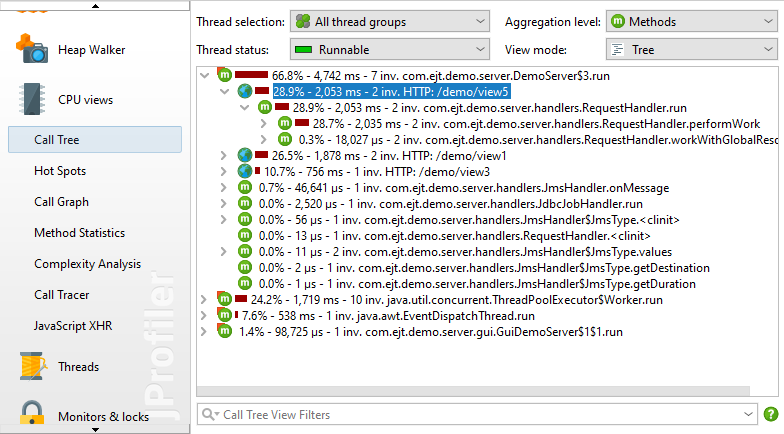
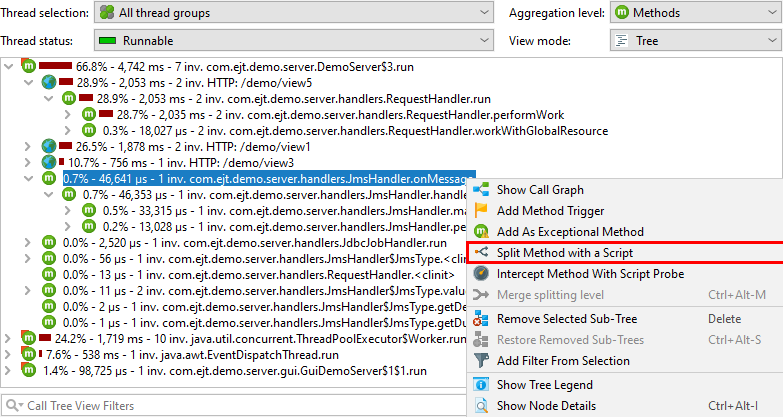
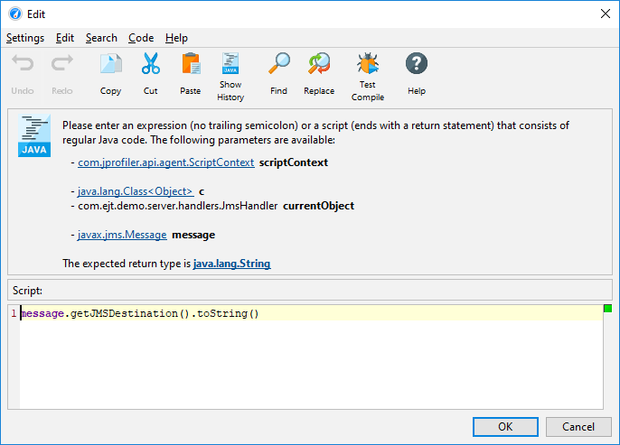
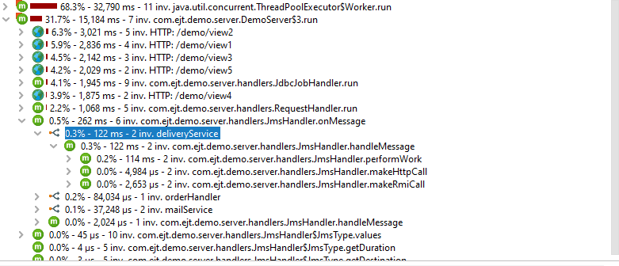
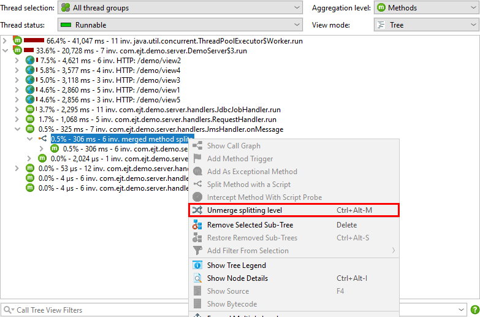
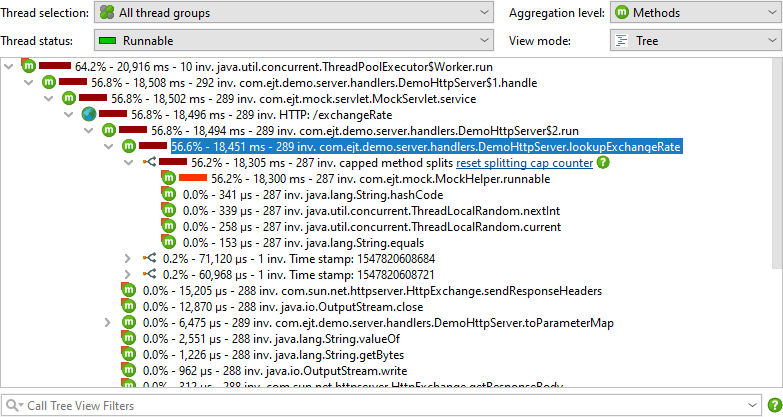
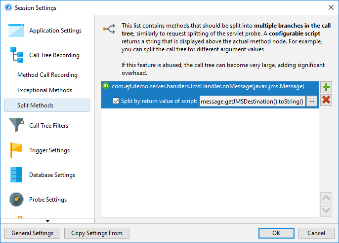

Call trees are cumulated for repeated invocations of the same call stacks. This is necessary because of memory overhead and the need for consolidating data in order to make it understandable. However, sometimes you want to break the cumulation at selected points so you can view parts of the call tree separately.
JProfiler has a concept of splitting the call tree with special nodes that are inserted into the call stack and show semantic information that has been extracted from the method invocation above the inserted node. These splitting nodes allow you to see additional payload information directly inside the call tree and to analyze their contained sub-trees separately. Each splitting type can be merged and unmerged on the fly with the actions in the context menu and has a cap on the total number of splitting nodes so that the memory overhead is bounded.
Probes can split the call tree according to the information that they collect at selected methods of interest. For example, the servlet probe splits the call tree for each different URL. The splitting in this case is highly configurable, so you can include only the desired parts of the URL, some other information from the servlet context or even produce multiple splitting levels.

If you write your own probe, you can split the call tree in the same way, with both the embedded and the injected custom probe systems.
The same splitting functionality that is available to probes can be used directly in the call tree, with the Split Method With a Script action. In the screen shot below, we want to split the call tree for a JMS message handler to see the handling of different types of messages separately.

Instead of writing a probe, you just enter a script that returns a string. The string is used for grouping
the call tree at the selected method and is displayed in the splitting node. If you return null,
the current method invocation is not split and added to the call tree as usual.

The script has access to a number of parameters. It is passed the class of the selected method, the instance for
non-static methods, as well as all method parameters. In addition, you get a ScriptContext object
that can be used to store data. If you need to recall some values from previous invocations of the same script,
you can invoke the getObject/putObject and getLong/putLong methods in the context.
For example, you may want to split only the first time a particular value for method parameter is seen. You
could then use
if (scriptContext.getObject(text) != null) {
scriptContext.putObject(text);
return text;
} else {
return null;
}as part of your splitting script.
Splitting nodes are inserted below the selected method. For the example in the above screen shot, we now see the handling code for each JMS message destination separately.

The splitting location is bound to a method, not to the selected call stack. If the same method is present somewhere else in the call tree, it will be split as well. If you use the Merge splitting level action, all splits will be merged into a single node. That node gives you a chance to unmerge the split again.

If you produce too many splits, a node labeled capped method splits will contain all further split invocations, cumulated into a single tree. With the hyperlink in the node, you can reset the cap counter and record some more splitting nodes. For a permanent increase in the maximum number of splits, you can increase the cap in the profiling settings.

To edit split methods after you have created them, go to the session settings dialog. If you don't need a particular split method anymore, but want to keep it for future use, you can disable it with the check box in front of the script configuration. This is better than just merging it in the call tree, because the recording overhead may be significant.
